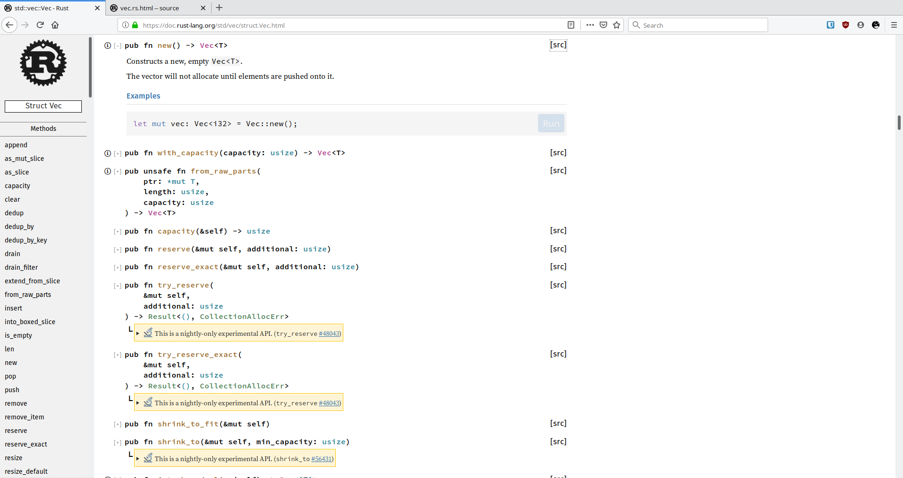
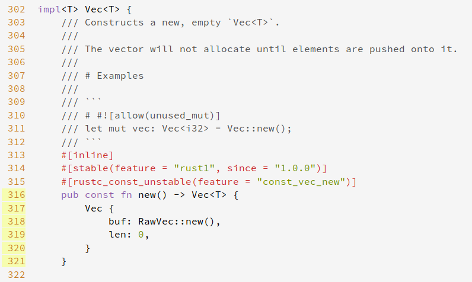

file, err := os.Open("file.go") // For read access.
if err != nil {
log.Fatal(err);
// Oops I forgot to return 😭
}
data := make([]byte, 100)
count, err := file.Read(data)
match File::create("name") {
// If it contains an actual file, we'll call it f
Ok(mut f) => {
f.write(b"Hello");
}
// If it contains an error, we'll call it e
Err(e) => {
println!("Error: {}", e);
},
}
There are better ways
let mut f = File::create("name")?;
f.write(b"Hello")?;
println!("File written 👏");
But what if I forget the second question mark?
let mut f = File::create("name")?;
f.write(b"Hello");
println!("File written 👏");
warning: unused `std::result::Result` that must be used
--> src/main.rs:6:5
|
6 | f.write_all(b"Hello");
| ^^^^^^^^^^^^^^^^^^^^^^
|
= note: #[warn(unused_must_use)] on by default
= note: this `Result` may be an `Err` variant, which should be handled
Not just a language, but an entire toolchain
Tool
C++
Python
Rust
compiler
Clang, MSVC, GCC
CPython, PyPy, Jython
rustc, gcc-rust
Package Manager
Conan, Hunter, vcpkg
pip, setuptools
Cargo
Build system
Automake, CMake, Scons, VS
setuptools, pbr, poetry, buildout
Cargo
Not just a language, but an entire toolchain
Tool
C++
Python
Rust
Code formatter
--
Black, isort
rustfmt
Linter
clang-tidy
flake8, pylint, pyflakes, mypy
Clippy
Testing
Catch, gtest
pytest, slash
built in


And there's rustup
OS Support
Windows, Linux and macOS are all tier 1
Yes, all the toolchain works in Windows
Batteries included
And they aren't corroded!
Threads are (not) evil
Threads are awesome
import threading
_COUNTER = 0
def thread_function():
global _COUNTER
RAX = _COUNTER
RAX = RAX + 1
_COUNTER = RAX
# Run 100 threads, wait and print _COUNTER
_COUNTER = 0
_LOCK = threading.Lock()
def thread_function():
global _COUNTER
with _LOCK:
print(".", end="", flush=True)
RAX = _COUNTER
print(".", end="", flush=True)
RAX = RAX + 1
print(".", end="", flush=True)
_COUNTER = RAX
# Run 100 threads, wait and print _COUNTER
let mut threads = vec![];
let mut counter = 0;
for _ in 0..NTHREADS {
threads.push(thread::spawn(|| {
// Thread body
counter += 1;
}));
}
You shall not pass!
error[E0499]: cannot borrow `counter` as mutable more than once at a time
--> src/main.rs:12:36
|
12 | threads.push(thread::spawn(|| {
| - ^^ mutable borrow starts here in previous iteration of loop
| ______________________|
| |
13 | | counter += 1;
| | ------- borrows occur due to use of `counter` in closure
14 | | }));
| |__________- argument requires that `counter` is borrowed for `'static`
Rust has atomic types
let mut threads = vec![];
let counter = Arc::new(AtomicU32::new(0));
for _ in 0..NTHREADS {
let counter = counter.clone();
threads.push(thread::spawn(move || {
// Thread body
counter.fetch_add(1, Ordering::SeqCst);
}));
}
And a mutex
let mut threads = vec![];
let message_mutex = Arc::new(
Mutex::new(String::from("It's over 9000"))
);
for _ in 0..NTHREADS {
let message_mutex = message_mutex.clone();
threads.push(thread::spawn(move || {
// Thread body
let mut message = message_mutex.lock().unwrap();
message.push('!');
}));
}
No dangling pointers
let maybe_message: Option<&String>;
{
let message = String::from("I am groot");
maybe_message = Some(&message);
}
println!("{:?}", maybe_message);
No use of invalid resources
let mut f = fs::File::create("sup")?;
drop(f);
f.write_all(b"hi!")?;
No mutation of borrowed resources
let mut numbers = vec![1,2,3,4,5,6];
for (index, num) in numbers.iter().enumerate() {
if *num < 4 {
numbers.remove(index);
}
}
This is how we should do it
let mut numbers = vec![1,2,3,4,5,6];
numbers.retain(|num| *num >= 4);
Rust gives you
Real type safetly with no magic values
No garbage collector and no resource leaking
No race conditions and no magical giant lock
A complete toolchain supported in Linux, Windows and macOS
Lots of other cool features that I did not have time to speak about